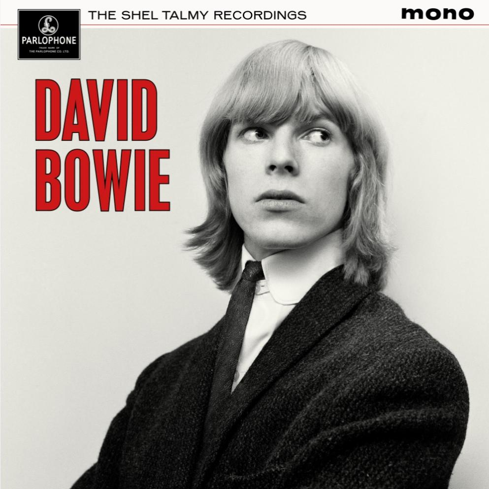

Parlophone Announces The Shel Talmy Recordings

Parlophone have announced the release of The Shel Talmy Recordings, a 22 track (11 on lp) collection of tracks Bowie recorded with the producer Shel Talmy in 1965. Due to be released on the 18th of September, the set is available on CD, lp, red-coloured lp exclusive to the official David Bowie store, and a UK-exclusive lp with alternative artwork limited to 1,965 copies available from certain retailers. As stated in the press-release, this new release is the "most complete collection" of these recordings, most importantly featuring 10 previously unreleased tracks (6 on lp). Amongst these unreleased tracks are an alternative vocal take of Baby Loves That Way (probably my favourite of the tracks Bowie recorded with the Lower Third), an instrumental track Keep Up With The Jones, and multiple demos. The most exciting track, in my opinion, is the demo I Do Believe I Love You, an acetate of which was sold at Wessex Auction Rooms back in 2020 for £15,000 (an extract of the track can be found here).
In preparation for the release, an unreleased track, I Want Your Love, recorded with the Manish Boys, has been released on streaming. The song is a cover of the Pretty Things track and I think it is pretty great.
This release certainly isn't what I, and many other fans, were expecting to come for this year's major project, seeing as Ken Scott confirmed in 2023 that he had completed work on recordings for an Aladdin Sane set (it is important to note that it has now been over two years since the last deluxe album boxset, Rock 'n' Roll Star!, back in 2024). It seems that many are disappointed by this release seemingly delaying the Aladdin Sane set even further, and it is hard to disagree. Indeed, I had been hopeful for the set to finally release, mainly so that we may finally get closer to the surely inevitable Diamond Dogs set. However, I am still very excited for this release. Whilst the 1965 recordings are by no means my favourite of Bowie's work, they serve as a fascinating document of the development of his artistry (and are generally still good tracks), and the unreleased tracks will certainly expand upon that fascination.
CD Tracklist:
- You've Got A Habit Of Leaving
- I Want Your Love*
- Cupid*
- I Pity The Fool
- Baby Loves That Way
- Keep Up With The Jones (Instrumental)*
- Leave Her To Me*
- I'll Follow You
- You Gotta Tell Her*
- Take My Tip
- Certain Woman*
- Today (Demo)*
- I Want My Baby Back (Demo)
- I Live In Dreams (Demo)*
- Bars Of The County Jail (Demo)
- That's Where My Heart Is (Demo)
- I Do Believe I Love You*
- You’ve Got A Habit Of Leaving (Alternative Overdub / Vocal)
- I Pity The Fool (Alternative Vocal Take)
- Baby Loves That Way (Alternative Vocal Take)*
- Take My Tip (Alternative Vocal Take)
Tracks with * are previously unreleased.